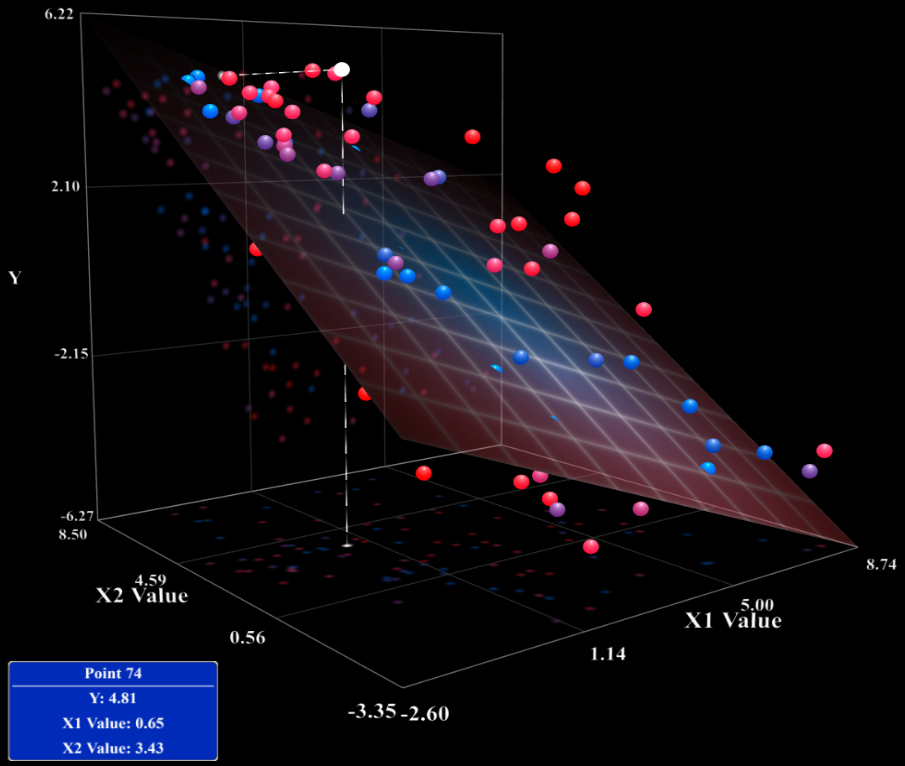
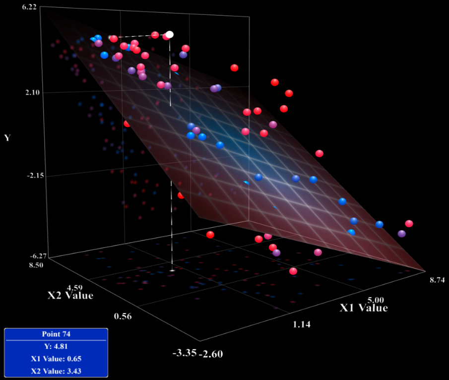

Welcome Note
Data Science is a field that combines statistical and computing methods,
processes, algorithms and systems to extract knowledge and insights from
structured and unstructured data in order to apply actionable insights.
 

A Machine Learning Model that predicts the relationship between two or more variables.
The model has one one dependent variable (Y) and the independent variable (X).

This is a special type of Regression model that involves categorical data.
The variables are encoded into a binary classification between 0 and 1 before perfoming regression.
This is a Machine Learning model that involves discovering natural grouping in data.
The algorithm uses similarity or distance measures between examples in the feature space to discover dense regions of observations.

A Machine Learning model concerned with how software agents should take actions in an environment.
The method helps you to learn how to attain a complex objectives or maximize a specific dimension over many steps.
Natural Language Processing

This is a Machine Learning tool that deals with the interaction between computers and humans using the natural language.
Its main goal is to read, understand and make sense of the human language.

Its an AI function that mimics the working of the human brain in processing data for use
in detecting objects, recognizing speech and making decisions.